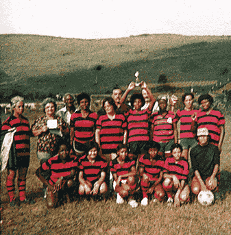

Michael Jackson creció en una casa modesta en Gary, Indiana, con sus ocho hermanos.
A pesar de la sencillez, este hogar fue el semillero donde su excepcional talento musical
comenzó a florecer, marcando el inicio de la leyenda del pop que llegaría a ser.
En la escuela primaria, Michael Jackson, apodado "Mikey", brillaba tanto en los estudios como en su secreto talento musical. Aunque sus profesores a veces lo instaban a concentrarse más en las lecciones, su pasión por la música nunca se desvaneció, anticipando su futura grandeza en la escena musical.

En su infancia, Michael Jackson disfrutaba de los deportes, especialmente el fútbol y el baloncesto. Estos pasatiempos no solo ofrecían distracción, sino que también resaltan la diversidad de intereses del futuro ícono musical global.